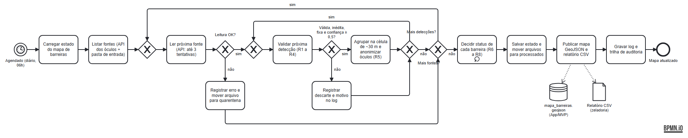
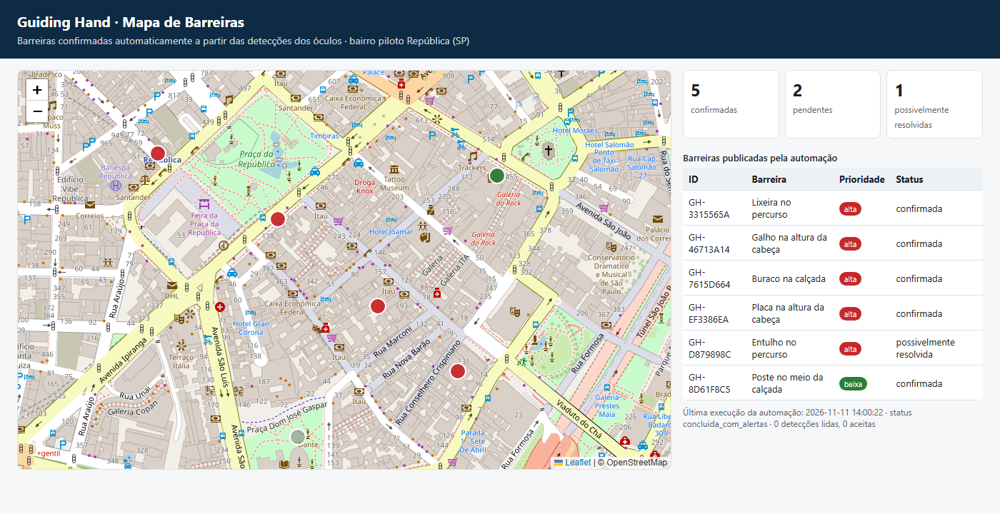

FIAP · Global Solution 11.2026 · CitizenTech · Engenharia de Software 4º ano
Robotic Process Automation: do processo manual à automação inteligente
Professor: Bruno Diniz
| Nome completo | RM |
|---|---|
| João Rodrigo Solano Nogueira | RM551319 |
| Julia Amorim Bezerra | RM99609 |
| Lana Giulia Auada Leite | RM551143 |
| Tony Willian da Silva Segalin | RM550667 |
| Repositório GitHub | https://github.com/LanaAuada/guiding-hand-rpa |
O Guiding Hand é um par de óculos inteligentes de baixo custo que ajuda pessoas cegas ou com baixa visão a andar pela cidade. Ele avisa, por vibração e voz, sobre obstáculos acima da cintura que a bengala não alcança, como placas, galhos, orelhões e caçambas, e deixa o celular guardado no bolso. No Brasil, 7,9 milhões de pessoas têm dificuldade para enxergar (Censo 2022).
Cada obstáculo fixo detectado pelos óculos vira um registro anônimo que, confirmado, entra no mapa de barreiras. Esse mapa serve a dois públicos: o app usa o mapa para traçar rotas que evitam barreiras conhecidas, e a prefeitura recebe relatórios para a zeladoria consertar as calçadas.
O problema operacional: as detecções chegam aos milhares, com ruído. Há pessoas andando, carros estacionados, leituras de baixa confiança, reenvios duplicados e arquivos com defeito. Sem automação, alguém teria de juntar os arquivos todos os dias, filtrar à mão, conferir se o mesmo buraco foi visto por vários usuários, atualizar o mapa e montar a planilha da zeladoria. O processo seria lento e sujeito a erro, e um falso alarme no mapa desvia a rota de uma pessoa cega sem necessidade.
Objetivo: confirmar barreiras de forma automática a partir de várias detecções independentes, manter o mapa de barreiras atualizado e gerar o relatório da zeladoria, todos os dias e sem intervenção humana.
| Para quem | Benefício |
|---|---|
| Pessoa cega ou com baixa visão | Rotas que evitam barreiras confirmadas (3 ou mais óculos), sem falso alarme causado por uma leitura isolada |
| Prefeitura / zeladoria | Planilha diária priorizada, com link do mapa para cada ponto, e aviso das barreiras que provavelmente já foram resolvidas |
| Equipe Guiding Hand | Fim do trabalho manual diário, com rastreabilidade completa por logs e auditoria |
1) Baixar os arquivos de detecção da nuvem. 2) Abrir cada um numa planilha. 3) Apagar pessoas, carros e linhas com erro. 4) Procurar detecções no mesmo lugar e contar quantos óculos diferentes as viram. 5) Atualizar o mapa. 6) Montar e enviar a planilha da zeladoria. O processo leva horas, é repetitivo e não deixa registro do que foi decidido.
| Elemento | Descrição |
|---|---|
| Início | Agendamento diário às 06h (Agendador de Tarefas / cron) ou execução manual |
| Entradas | API /deteccoes da nuvem dos óculos e arquivos JSON/CSV em data/entrada/; estado anterior do mapa |
| Etapas | Carregar estado, coletar as fontes, validar e classificar cada detecção, agrupar, decidir o status de cada barreira, salvar, publicar e registrar |
| Decisões | Leitura OK? Detecção válida, inédita, fixa e confiável? Mais detecções? Mais fontes? Status de cada barreira (R6 a R8) |
| Repetições | Para cada fonte, para cada detecção e para cada barreira |
| Exceções | API fora do ar, arquivo inválido, registro inválido, duplicidade, estado corrompido, pasta ausente (seção 7) |
| Saídas | mapa_barreiras.geojson (MVP), relatorio_zeladoria_AAAA-MM-DD.csv, resumo_execucao.json, logs e auditoria |

docs/fluxo_automacao.bpmn, abre em bpmn.io ou Camunda Modeler)
| Tecnologia | Justificativa |
|---|---|
| Python 3 (só biblioteca padrão) | Gratuito, versionável no GitHub e fácil de ler. Sem dependências externas, roda em qualquer máquina sem instalação e reduz a superfície de ataque |
urllib, json, csv | Integração com a API REST e com os arquivos estruturados enviados pela nuvem |
logging | Logs com data/hora e níveis (INFO, WARNING, ERROR, CRITICAL) |
hashlib (SHA-256 + salt) | Anonimização do identificador dos óculos (LGPD) |
unittest | Testes automatizados de sucesso, decisão e falha |
| GeoJSON | Padrão aberto de mapas, lido diretamente pelo app (Leaflet), por Google Maps e por sistemas de prefeituras |
| BPMN 2.0 | Notação padrão de processos para documentar o fluxo |
Escolhemos Python em vez de UiPath ou Power Automate porque o processo não depende de interface gráfica: é integração de dados (API e arquivos). Assim o robô pode rodar na mesma nuvem dos outros serviços do Guiding Hand.
| Regra | Descrição | Onde |
|---|---|---|
| R1 | Validação: campos obrigatórios, coordenada dentro do município de São Paulo, confiança entre 0 e 1, data no formato ISO, tipo conhecido | regras.validar |
| R2 | Duplicidade: cada id_deteccao conta uma vez, inclusive entre execuções diferentes | main.processar_registro |
| R3 | Pessoa, ciclista, animal e carro são obstáculos móveis e não entram no mapa | main.processar_registro |
| R4 | Confiança abaixo de 0,5 é descartada como ruído | main.processar_registro |
| R5 | Posição generalizada para uma célula de ~30 m; detecções na mesma célula e do mesmo tipo formam uma barreira | regras.celula |
| R6 | Barreira confirmada se vista por 3 ou mais óculos diferentes; caso contrário, pendente (não sai no mapa) | regras.definir_status |
| R7 | Prioridade pelo tipo (buraco, galho, placa, caçamba e entulho = alta; orelhão, lixeira e calçada irregular = média; poste = baixa); 10 ou mais detecções elevam para alta | regras.definir_prioridade |
| R8 | Barreira confirmada sem nova detecção há mais de 30 dias vira possivelmente resolvida; se voltar a ser detectada, é reaberta | regras.definir_status |
Todos os limites (3 óculos, 0,5, 30 m, 30 dias, 10 detecções) ficam em src/config.py e podem ser ajustados sem mexer no código.
| Falha prevista | Tratamento |
|---|---|
| API fora do ar / timeout | 3 tentativas com espera crescente (1s, 2s); depois registra ERRO, marca api: indisponivel e segue com os arquivos |
| Arquivo corrompido, vazio, CSV sem cabeçalho ou extensão errada | Registra ERRO com o motivo e move o arquivo para data/rejeitados/ (quarentena); os outros seguem |
| Registro inválido | Rejeitado com o motivo no log; o lote continua |
| Dados duplicados | Ignorados com base nos IDs já processados, guardados no estado |
| Pasta ausente | Criada automaticamente, com AVISO no log |
| Estado corrompido | Cópia de segurança barreiras_corrompido_*.json e reinício limpo |
| Erro inesperado num registro | Capturado com stack trace no log; os demais registros seguem |
| Queda durante a gravação | Gravação atômica (arquivo temporário e depois renomeia); os arquivos só saem da entrada depois que o estado é salvo, então são reprocessados sem duplicar |
| Falha crítica | Status falha, log CRITICAL, linha na auditoria e código de saída 1, para o agendador alertar. Nenhuma falha é silenciosa. |
Cada execução gera logs/execucao_<id>.log (data/hora, nível, cada decisão e cada erro) e
acrescenta uma linha em logs/auditoria.jsonl com os totais, o status e os alertas. Os logs nunca contêm o ID dos óculos.
2026-11-11 14:00:16 | INFO | === Início da execução 20261111_140016_78bc === 2026-11-11 14:00:16 | ERROR | anotacoes_operador.txt: extensão não suportada (.txt). Movido para quarentena 2026-11-11 14:00:16 | INFO | Arquivo deteccoes_oculos_lote1.json lido: 47 detecções 2026-11-11 14:00:16 | ERROR | deteccoes_oculos_lote3.json: JSON inválido (linha 1). Movido para quarentena 2026-11-11 14:00:16 | DEBUG | Detecção DET-00028 ignorada: obstáculo móvel (pessoa) 2026-11-11 14:00:16 | WARNING | Detecção DET-00056 rejeitada: coordenada fora da área do piloto (São Paulo) 2026-11-11 14:00:16 | WARNING | Detecção DET-00057 rejeitada: campos ausentes: tipo 2026-11-11 14:00:16 | INFO | Barreira GH-7615D664 (buraco): pendente -> confirmada | 5 óculos, 8 detecções, prioridade alta 2026-11-11 14:00:16 | INFO | Barreira GH-D879898C (entulho): pendente -> possivelmente_resolvida | 3 óculos, 3 detecções 2026-11-11 14:00:16 | INFO | Detecções: 60 lidas | 33 aceitas | 4 inválidas | 2 duplicadas | 18 móveis | 3 baixa confiança | 0 erros 2026-11-11 14:00:16 | INFO | Barreiras: 4 confirmadas | 2 pendentes | 1 possivelmente resolvidas 2026-11-11 14:00:16 | INFO | === Fim da execução: CONCLUIDA_COM_ALERTAS (0.06s) ===
Trecho da auditoria (execução com a API fora do ar):
{"execucao": "20261111_140022_597f", "inicio": "2026-11-11T14:00:22", "status": "concluida_com_alertas",
"fontes": {"arquivos_lidos": 0, "arquivos_rejeitados": 0, "api": "indisponivel"},
"barreiras": {"total_conhecidas": 8, "confirmadas": 5, "pendentes": 2, "possivelmente_resolvidas": 1},
"alertas": ["API indisponível após 3 tentativas (URLError: ...)"]}
A automação publica saida/mapa_barreiras.geojson, um arquivo estruturado no padrão GeoJSON, e
saida/resumo_execucao.json. O componente do MVP (mvp/index.html, a tela de mapa do app Guiding
Hand) lê esses arquivos e mostra as barreiras no mapa, coloridas por prioridade, com uma lista acessível para leitor
de tela e os indicadores da última execução. O mesmo GeoJSON alimenta o cálculo de rotas que evita barreiras
confirmadas. A zeladoria recebe relatorio_zeladoria_AAAA-MM-DD.csv, que abre direto no Excel.
Exemplo de uma barreira publicada:
{"type": "Feature", "geometry": {"type": "Point", "coordinates": [-46.6422, -23.544]},
"properties": {"id": "GH-7615D664", "tipo": "buraco", "descricao": "Buraco na calçada", "status": "confirmada",
"prioridade": "alta", "total_deteccoes": 8, "dispositivos_distintos": 5, "confianca_media": 0.8, ...}}

18 testes automatizados (python -m unittest -v), cada um numa pasta temporária isolada. Resultado: 18 de 18 aprovados.
| # | Cenário | Tipo | Resultado |
|---|---|---|---|
| CT01 | 3 óculos veem o mesmo buraco | Sucesso | Confirmada e publicada no GeoJSON e no CSV |
| CT02 | Arquivo lido | Sucesso | Movido para processados |
| CT03 | CSV com ; e vírgula decimal | Sucesso | Aceito |
| CT04 | Só 2 óculos | Decisão | Pendente, fora do mapa |
| CT05 | Pessoa e carro | Decisão | Ignorados |
| CT06 | Confiança 0,3 | Decisão | Descartadas |
| CT07 | Última detecção há 40 dias | Decisão | Possivelmente resolvida |
| CT08 | 10 detecções de um poste | Decisão | Prioridade sobe para alta |
| CT09 | Detecções em dias diferentes | Decisão | Acumulam até confirmar |
| CT10 | JSON corrompido + arquivo bom | Falha | Quarentena; o bom é processado |
| CT11 | Registros inválidos | Falha | Rejeitados com motivo no log |
| CT12 | Duplicadas no lote e em reenvio | Falha | Contadas uma vez |
| CT13 | API fora do ar | Falha | Novas tentativas, ERRO no log, segue com arquivos |
| CT14 | Pasta de entrada ausente | Falha | Criada; execução segue |
| CT15 | Estado corrompido | Falha | Backup e reinício |
| CT16 | Duas execuções | Auditoria | 2 linhas na auditoria |
| CT17 | ID real dos óculos | LGPD | Ausente de logs e saídas |
| CT18 | Coordenada exata | LGPD | Generalizada para ~30 m |
A execução de ponta a ponta também foi registrada em assets/execucao_terminal.txt em quatro rodadas:
arquivos locais, API online, mesma API de novo (4 duplicadas ignoradas) e API fora do ar.
Como o uso do produto revela uma deficiência, tratamos os dados como dado pessoal sensível (LGPD, art. 5º, II, e art. 11).
GH_SALT, fora do código), usado só para contar dispositivos distintos..env no .gitignore; os dados do repositório são simulados.| Repositório GitHub | https://github.com/LanaAuada/guiding-hand-rpa |
| Vídeo demonstrativo | https://youtu.be/JFQZY3XF2d0 |
| Fluxo BPMN | docs/fluxo_automacao.bpmn (no repositório) |